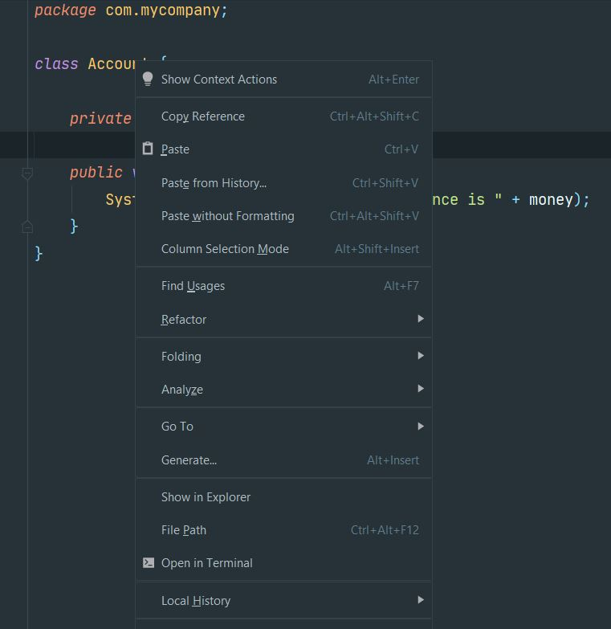
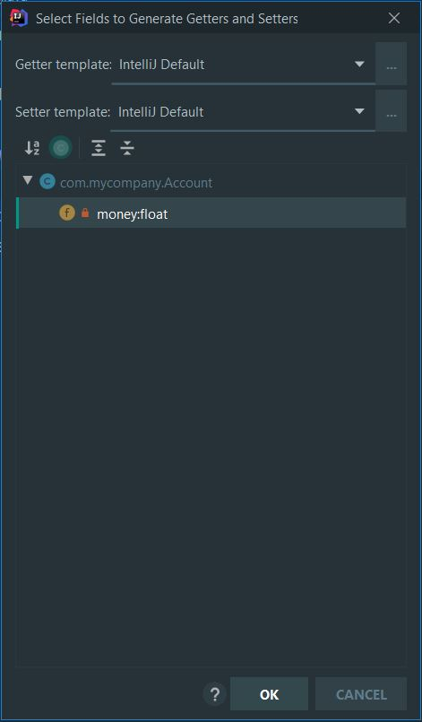
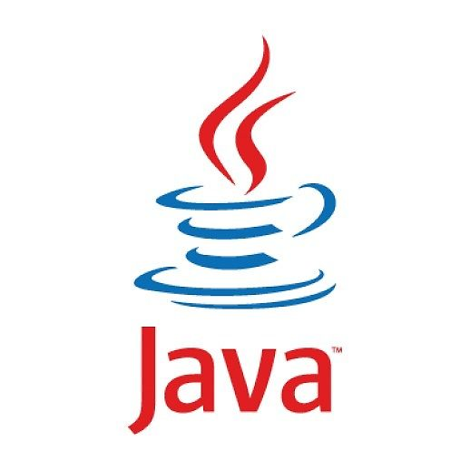

ΔΩΡΕΑΝ ΜΑΘΗΜΑΤΑ JAVA
Στο σημερινό δωρεάν μάθημα Java θα ασχοληθούμε με τους access specifiers
και πως αυτοί μας οδηγούν στο να χρησιμοποιήσουμε getter και setter μεθόδους.
Σε κάθε μεταβλητή ή μέθοδο που έχουμε δημιουργήσει μέχρι τώρα έχουμε
βάλει την λέξη public μπροστά από τον ορισμό της. Όπως ήδη
έχουμε αναφέρει, η λέξη κλειδί public μας επιτρέπει να καλέσουμε τις instance
μεταβλητές και instance μεθόδους είτε βρισκόμαστε στο ίδιο πακέτο με την
κλάση από την οποία δημιουργούμε το αντικείμενο, είτε όχι. Όμως η χρήση του
public δεν είναι η καλύτερη προσέγγιση γιατί μπορεί να μας προκαλέσει πολλά
προβλήματα κυρίως όταν εισάγουμε τιμές στο πρόγραμμα μας. Ας δούμε όμως ένα
παράδειγμα για να καταλάβουμε το πρόβλημα καλύτερα.
Στην σημερινή δωρεάν ενότητα Java θα ασχοληθούμε με ένα πρόγραμμα το οποίο
κάνει simulation ένα ΑΤΜ μηχάνημα από το οποίο μπορούμε να κάνουμε deposit ή
withdraw χρημάτων. Στην αρχή θα δούμε την απλή μορφή του, αλλά μέχρι το τέλος
της ενότητας θα το έχουμε τροποποιήσει έτσι ώστε να ακολουθεί τους σωστούς
κανόνες ανάπτυξης κώδικα.
Account.java
package com.bank;
class Account {
public float money;
public void getBalance(){
System.out.println("Your current balance is " + money);
}
}
Person.java
package com.bank;
class Person {
public static void main(String[] args) {
Account wallet = new Account();
wallet.money=500;
wallet.getBalance();
wallet.money=300;
wallet.getBalance();
}
}
Output
Your current balance is 500.0
Your current balance is 300.0
Ας περιγράψουμε αυτό το απλό πρόγραμμα και ας δούμε τι είδος προβλήματα
μπορεί να αντιμετωπίσουμε. Η κλάση Account περιέχει μια instance
μεταβλητή με το όνομα money η τιμή της οποίας είναι στην ουσία το balance
του τραπεζικού λογαριασμού. Η μέθοδος getBalance( ) μας βοηθάει στο να
έχουμε μια εικόνα πόσο είναι το ποσόν που έχει απομείνει στον λογαριασμό
μας. Στην κλάση Person δημιουργούμε ένα αντικείμενο είδος Account και μετά
καλούμε την μεταβλητή money (μπορούμε να την καλέσουμε γιατί είναι public) και
δίνουμε το ποσόν 500 σαν αρχική τιμή. Αυτό το επιβεβαιώνουμε καλώντας την
μέθοδο getBalance( ). Μετά θέλουμε να αφαιρέσουμε 200 από τον λογαριασμό
μας. Οπότε δημιουργούμε μια μεταβλητή x, της δίνουμε την τιμή 200 και μετά
αφαιρούμε αυτό το ποσόν από το 500.
Το πρόγραμμα αυτό, μπορεί στην πράξη να δουλεύει αλλά έχει
πολλά κενά. Πρώτον, αφήνουμε τον χρήστη να κάνει μια κατάθεση ενός ποσού
χωρίς κανένα έλεγχο στο όριο της κατάθεσης. Οπότε αν έγραφε 5000 αντί για
500 το πρόγραμμα θα το δεχόταν. Επίσης, αφαιρούμε λεφτά από τον τραπεζικό
λογαριασμό χωρίς να έχουμε κανέναν απολύτως έλεγχο αν έχουμε ξεπεράσει το
όριο. Πως θα μπορούσαμε να τον γράψουμε αυτό τον κώδικα έτσι ώστε να προσφέρει
ασφάλεια στην διαδικασία των τραπεζικών συναλλαγών μας?
Πριν απαντήσουμε αυτή την ερώτηση, θα πρέπει πρώτα να αναφερθούμε
στα access levels τα οποία υπάρχουν στην java και τα οποία
εφαρμόζονται σε επίπεδο μεταβλητών και μεθόδων. Αυτά είναι τα εξής:
- public – Μπορούμε να έχουμε πρόσβαση από οπουδήποτε
- private - Έχουμε πρόσβαση μόνο μέσα από την ίδια κλάση
- protected - Η πρόσβαση είναι δυνατή όταν βρισκόμαστε στο ίδιο πακέτο
με την κλάση ή κληρονομούμε από αυτήν.
- default - Δεν υπάρχει λέξη default απλά δεν βάζουμε τίποτα σαν access
specifier και αυτό μας επιτρέπει
να έχουμε πρόσβαση μόνο όταν είμαστε στο ίδιο πακέτο με την κλάση
Εμείς μέχρι τώρα, χρησιμοποιούσαμε public σαν access specifier μπροστά
από όλες τις μεταβλητές αλλά και τις μεθόδους. Αυτό μας επιτρέπει όταν
δημιουργούμε το reference και πατήσουμε τελεία (reference.) να βλέπουμε όλες τις
μεταβλητές και τις μεθόδους που περιέχει το αντικείμενο. Στο πρόγραμμα μας όμως, το
να έχουμε απευθείας πρόσβαση επάνω στην μεταβλητή money μπορεί να προκαλέσει πολλά
προβλήματα. Ο τρόπος λοιπόν που συνήθως αντιμετωπίζουμε μια τέτοια κατάσταση είναι
να αλλάζουμε τον access specifier στις μεταβλητές από public σε private.
Κάνοντας αυτή την αλλαγή, δεν θα είναι δυνατόν (με βάση την θεωρία) από
μια διαφορετική κλάση να δούμε την instance μεταβλητή money. Ας το βεβαιώσουμε αυτό πρώτα.

Με βάση την θεωρία, για σε οτιδήποτε είναι private έχουμε
πρόσβαση μόνο από την ίδια κλάση, δηλαδή μόνο μέσα από την Account. Εδώ
λοιπόν είναι που χρειαζόμαστε τις getter και setter μεθόδους. Ενώ η μεταβλητή
είναι private, οι getter και setter μέθοδοι είναι public οπότε μπορούμε δια
μέσω αυτών να χειριστούμε τις τιμές των μεταβλητών.
Το NetBeans, όπως και οποιοδήποτε άλλο IDE με το οποίο γράφετε
κώδικα java, προσφέρει έναν εύκολο τρόπο να δημιουργήσει τις getter και
setter μεθόδους για εσάς. Αυτό που έχουμε να κάνουμε είναι να κάνουμε
δεξί κλικ οπουδήποτε μέσα στην κλάση. Από το εμφανιζόμενο μενού
επιλέγουμε Insert Code → Getter and Setter


Από το εμφανιζόμενο παράθυρο επιλέγετε τις μεταβλητές για τις οποίες
θέλετε να δημιουργήσετε getter και setter μεθόδους. Αν κάνετε check στην
επιλογή Encapsulate Fields τότε θα αλλάξει αυτόματα η λέξη public σε λέξη private.

Το αποτέλεσμα θα είναι να αλλάξει ο κώδικας της κλάσης μας στον εξής:
Account.java
package com.bank;
class Account {
private float money;
public void getBalance(){
System.out.println("Your current balance is " + money);
}
public float getMoney() {
return money;
}
public void setMoney(float money) {
this.money = money;
}
}
Η getMoney( ) απλά μας επιστρέφει την τιμή της μεταβλητής money
ενώ η setMoney( ) θα περάσει μια καινούργια τιμή στην instance μεταβλητή
money της κλάσης. Επίσης επειδή και οι δύο μέθοδοι είναι public μπορούμε
να τις δούμε και να τις καλέσουμε από την Person.

Τι έχουμε καταφέρει τώρα? Μα πολύ απλά μπορούμε να προσθέσουμε
κώδικα τώρα μέσα στις μεθόδους έτσι ώστε πριν αναθέσουμε την τιμή στην
μεταβλητή money να κάνουν κάποιους ελέγχους. Η πιο κάτω μορφή του κώδικα
είναι η τελική έκδοση του προγράμματος όπου δεν επιτρέπουμε να γίνει
κατάθεση πάνω από 500 ενώ αν δεν έχουμε αρκετά χρήματα στον λογαριασμό
το πρόγραμμα θα κάνει exit και θα ολοκληρωθεί η εκτέλεσή του.
Account.java
package com.bank;
class Account {
private float money;
public void getBalance(){
System.out.println("Your current balance is " + money);
}
public void setMoney(float money) {
if (money>0 && money <=500){
this.money = money;
}else{
System.out.println("Please enter a value between 0 and 500");
System.exit(0);
}
}
public void getMoney(float amount) {
if (money >= amount) {
money -= amount;
System.out.println("You pull out " + amount);
System.out.println("Your current balance is "+money);
}else {
System.out.println("You do not have enough money");
System.out.println("Please deposit more money");
System.exit(0);
}
}
}
Person.java
package com.bank;
class Person {
public static void main(String[] args) {
Account wallet = new Account();
wallet.setMoney(500);
wallet.getBalance();
wallet.getMoney(300);
wallet.getMoney(300);
}
}
Output
Your current balance is 500.0
You pull out 300.0
Your current balance is 200.0
You do not have enough money
Please deposit more money
Πριν κλείσουμε την σημερινή ενότητα θα ήθελα να αναφέρω ότι
επίσημα η λογική του να κάνω private στοιχεία της κλάσης
ονομάζεται encapsulation. Επίσης δεν υπάρχουν λέξεις
κλειδιά στην java με το όνομα getter ή setter. Ακόμα και η λογική του να
βάζουμε την λέξη get ή set μπροστά από την μέθοδο δεν είναι
τίποτα άλλο από έναν άγραφο κανόνα που υπάρχει ανάμεσα στους
java προγραμματιστές και ακολουθούν όλα τα IDE.
Πίσω στις δωρεάν ενότητες Java Programming

Michail Kassapoglou Admin
Γεια σας, είμαι ο Μιχάλης Κασάπογλου και θα σας διδάξω με τον ποιο απλό
τρόπο να προγραμματίζετε σε Java. Ασχολούμαι με την τεχνική εκπαίδευση
σε διάφορες πλατφόρμες, λειτουργικά συστήματα και γλώσσες προγραμματισμού
πάνω από 20 έτη. Κατέχω έναν αρκετά μεγάλο αριθμό πιστοποιήσεων
και σαν Τraining Lead στην Intrasoft έχω την δυνατότητα να αναβαθμίζω συνεχώς
τις γνώσεις μου και να έχω άμεση επαφή με αληθινά projects και εξειδικευμένες
μεθόδους
ανάπτυξης εφαρμογών που έχουν υψηλές απαιτήσεις.
Για τυχόν ερωτήσεις σας μπορείτε να επικοινωνήσετε μαζί μου
στο Michail.Kassapoglou@gmail.com
Σας ευχαριστώ που επισκεφτήκατε τα δωρεάν μαθήματα προγραμματισμού JAVA.